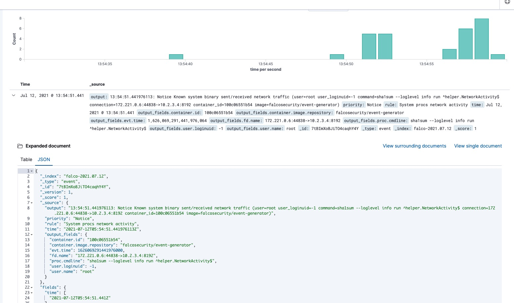

介绍
Falco 由 Sysdig 于 2016 年创建，是第一个作为孵化级项目加入 CNCF 的运行时安全项目。Falco可以对Linux系统调用行为进行监控，提供了lkm 内核模块驱动和eBPF 驱动。Falco的主要功能如下：从内核运行时采集Linux系统调用，提供了一套强大的规则引擎，用于对Linux系统调用行为进行监控，当系统调用违反规则时，会触发相应的告警。
安装文档地址如下：
https://falco.org/docs/getting-started/installation/
curl -s https://falco.org/repo/falcosecurity-3672BA8F.asc | apt-key add -
echo "deb https://download.falco.org/packages/deb stable main" | tee -a /etc/apt/sources.list.d/falcosecurity.list
apt-get update -y
apt-get -y install linux-headers-$(uname -r)
apt-get install -y falco
rpm --import https://falco.org/repo/falcosecurity-3672BA8F.asc
curl -s -o /etc/yum.repos.d/falcosecurity.repo https://falco.org/repo/falcosecurity-rpm.repo
yum -y install kernel-devel-$(uname -r)
yum -y install falco

Falco规则文件是包含三种类型元素的YAML文件：
Rules 、Macros、Lists
Rules就是生成告警的条件以及一下描述性输出字符串。Macros 是可以在规则或者其他宏中重复使用的规则条件片段。Lists 类似Python 列表，定义了一个变量集合。
Falco 使用了Sysdig， 在rule的 condition里面,任何 Sysdig 过滤器都可以在 Falco 中使用。
参考如下：
https://github.com/draios/sysdig/wiki/sysdig-user-guide#filtering
这是一个rule的 condition条件示例，在容器内运行 bash shell 时发出警报：
container.id != host and proc.name = bash
第一个子句检查事件是否发生在容器中（Sysdig 事件有一个container字段，该字段等于"host"事件是否发生在host主机上）。第二个子句检查进程名称是否为bash。
举个完整的列子
- list: my_programs
items: [ls, cat, bash]
- macro: access_file
condition: evt.type=open
- rule: program_accesses_file
desc: track whenever a set of programs opens a file
condition: proc.name in (my_programs) and (access_file)
output: a tracked program opened a file (user=%user.name command=%proc.cmdline file=%fd.name)
priority: INFO
web应用进程java，php，apache，httpd，tomcat 中运行其他进程falco demo，图片来自，字节沙龙

web应用进程java，php，apache，httpd，tomcat 中读取查看敏感文件falco demo，图片来自，字节沙龙
下面，我们修改falco 的配置，/etc/falco/falco.yaml
json_output: true
json_include_output_property: true
http_output:
enabled: true
url: "http://localhost:2801"
启动falco
systemctl enable falco && systemctl start falco
https://github.com/falcosecurity/falcosidekick.git
falcosidekick 是一个管道工具，接受 Falco的事件并将它们发送到不同的持久化工具中。我们使用falcosidekick把falco post 过来的数据写入es ，也可以写入kafka。我们也读取kafka里面的东西完成告警， 也可以用 Prometheus 和falco-exporter 完成告警。如下图。
elasticsearch:
hostport: "http://10.10.116.177:9200"
index: "falco"
type: "event"
minimumpriority: ""
suffix: "daily"
mutualtls: false
checkcert: true
username: ""
password: ""
kafka:
hostport: ""
topic: ""
# minimumpriority: "debug"

批量部署&更新规则
我们在生产环境中需要批量部署和更新规则需求，所以我们可以使用saltstack 或者 ansible 下发对应shell脚本来完成我们的需求。
批量部署
#!/bin/bash
if [ -n "$(uname -a | grep Ubuntu)" ]; then # 按实际情况修改
curl -s https://falco.org/repo/falcosecurity-3672BA8F.asc | apt-key add -
echo "deb https://download.falco.org/packages/deb stable main" | tee -a /etc/apt/sources.list.d/falcosecurity.list
apt-get update -y
apt-get install -y falco
else
rpm --import https://falco.org/repo/falcosecurity-3672BA8F.asc
curl -s -o /etc/yum.repos.d/falcosecurity.repo https://falco.org/repo/falcosecurity-rpm.repo
yum -y install falco
fi
systemctl enable falco && systemctl start falco
批量更新规则
#!/bin/bash
BDATE=`date +%Y%m%d%H%M%S`
URL=http://8.8.8.8:8888/falco_update.tar.gz
if [ -d /etc/falco_bak ]
then
cp -r /etc/falco /etc/falco_bak/${BDATE}
rm -rf /etc/falco_bak/falco_update.tar.gz
else
mkdir /etc/falco_bak
cp -r /etc/falco /etc/falco_bak/${BDATE}
fi
curl -o /etc/falco_bak/falco_update.tar.gz ${URL} && rm -rf /etc/falco
tar -xzvf /etc/falco_bak/falco_update.tar.gz -C /etc && systemctl restart falco
把规则falco_update.tar.gz，提前准备好，使用saltstack 推下去即可.saltstack demo 如下：
[root@localhost ~]$ cat /srv/salt/top.sls
base:
'*':
- exec_shell_install
[root@localhost ~]$ cat /srv/salt/exec_shell_install.sls
exec_shell_install:
cmd.script:
- source: salt://falco_install.sh
- user: root
[root@localhost ~]$ salt '*' state.highstate